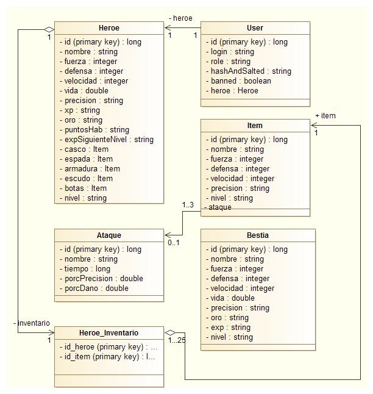

Entrega 2: Versión con JSPs y esquema de la BD
Componentes del grupo "Warline"
- Javier López de Lerma
- Javier Sandoval Ferrandis
- David Martín-Maldonado Jiménez
- Jose Manuel Pérez Zamorano
- Enrique Ituarte Martínez-Millán
+Esquema de la base de datos
+
Vistas que componen esta entrega
- Vista Login - Página de entrada, donde el usuario se puede registrar. También incluye una descripción del juego. Es interesante y necesaria para que el usuario se registre y aparte es una incitación al jugador para que pruebe el juego. La funcionalidad de esta vista es presentar un banner propio y un estilo de paneles que iremos cambiando para mejorar la temática.
- Vista común - Versión de la página de entrada cuando ya estás registrado. La zona de registro se sustituye ahora por un panel de botones para acceder a las demás vistas, además del botón de salir.
Vistas de administrador:
- Gestion de usuarios - El adminsitrador puede en esta vista, eliminar, banear y filtrar usuarios. Es muy útil para la gestión del programa.
- Gestion de objetos - Igual que con los usuarios, el administrador tiene esas funciones además de crear un nuevo objeto. Bastante útil para administrar los objetos del juego.
- Nuevo objeto - Vista donde el administrador mete los datos para crear el nuevo objeto. Útil por ser la funcionalidad principal de la gestión de objetos.
- Nueva bestia - Vista donde el administrador mete los datos para crear la nueva bestia.
Vistas de usuario:
- Perfil - En ella se muestran las estadísticas, inventario, equipación, imagen del personaje... El jugador debe poder comprobar en todo momento el estado del personaje.
- Armería - Presenta tanto el inventario como los objetos que se pueden comprar en la armería y un visualizador para ellos. Lo más interesante de esta es que se puede ver claramente la descripción de los objetos (estadísticas, imágenes), así como proporcionar una visión clara del inventario y las mejoras sobre el personaje.
- Lobby - Se podrá organizar los combates y ver información general respecto a ellos. Sirve para dar paso a la vista principal de la arena.
- Arena - En esta vista se podrán ver los combates entre personajes. Para las siguientes entregas tenemos pensado dividir esta vista en dos: configuración de combates(búsqueda de contrincantes) y combates en sí. Es muy interesante poder ver el avance general de un combate (quién golpea a quién, cuánta vida le quita) así como poder seleccionar los contrincantes.
- Arcade - Muestra una lista de niveles en los que se podrá luchar contra las bestias. Posee cualidades parecidas a la vista anterior, pero sin jugar contra otros usuarios. Mayoritariamente es una zona de prácticas.
Recursos externos utilizados
- DaFont - Fuente gratuita Barbarian para crear el Logo.
- Devianart - Página de donde hemos sacado imágenes como la de fondo.